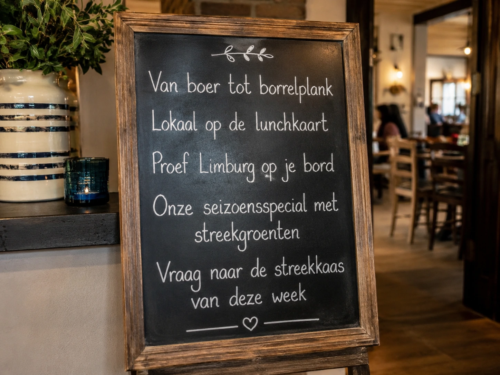

Menukaartideeën
- Streekborrelplank als sharing starter.
- Soep of bijgerecht met lokale seizoensgroenten.
- Lunchbrood met streekkaas en chutney.
Inspiratie voor je zaak
Praktische toepassingen voor restaurant, fastservice, catering en hotelbar. Kort, bruikbaar en direct inzetbaar.

Tafelkaart & social
Gebruik korte, concrete teksten die je team aan tafel kan uitleggen. Combineer ze met een tafelkaartje, krijtbord of social post waarin je niet alleen het product benoemt, maar ook de herkomst.
Seizoenscampagnes
Gebruik lokale producten ook rondom momenten waarop gasten sneller kiezen voor borrel, comfortfood of samen kijken. Deze korte video’s zijn bedoeld als inspiratie voor social, schermen in de zaak of een landingspagina.
Voor kerstborrels, eindejaarsdiners en arrangementen waarbij gasten iets bijzonders willen delen.
Een warme videouiting voor kerstmenu’s, feestelijke borrelplanken en lokale producten tijdens de decemberperiode.
Voor warme lunchspecials, seizoensgroenten, comfortfood en gerechten met een herkenbare streekbasis.
Voor cafés, sportkantines, hotels en restaurants die een borrelmoment willen koppelen aan lokale smaak.
Krijtbordinspiratie

Aan de slag
Ontdek producten, recepten en leveranciersverhalen die jouw menukaart meer herkomst en smaak geven.